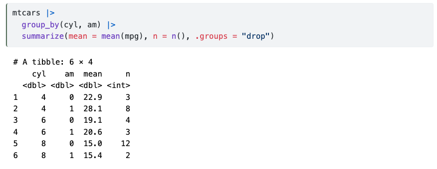
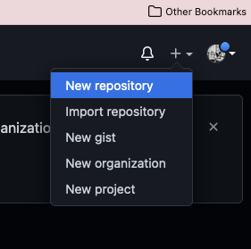

Data analysis with R and Quarto + Collaboration using GitHub
Introductory workshop for the Human AI Team, Sep 2022
How does RMarkdown work?

Quarto, more than just knitr

Quarto, more than just knitr

Rendering
- Render button

{kind=link}
#/media/File:Appleterminal2.png){kind=link}
Source

Output
Source
---
title: "ggplot2 demo"
author: "Norah Jones"
date: "5/22/2021"
format:
html:
fig-width: 8
fig-height: 4
code-fold: true
---
## Air Quality
@fig-airquality further explores the impact of temperature
on ozone level.
```{r}
#| label: fig-airquality
#| fig-cap: Temperature and ozone level.
#| warning: false
library(ggplot2)
ggplot(airquality, aes(Temp, Ozone)) +
geom_point() +
geom_smooth(method = "loess"
)
```Output 
Quarto workflow
Executing the Quarto Render button in RStudio will call Quarto render in a background job - this will prevent Quarto rendering from cluttering up the R console, and gives you and easy way to stop.

Code, more than just R
```{python}
#| eval: false
#| label: fig-polar
#| fig-cap: "A line plot on a polar axis"
import numpy as np
import matplotlib.pyplot as plt
r = np.arange(0, 2, 0.01)
theta = 2 * np.pi * r
fig, ax = plt.subplots(
subplot_kw = {'projection': 'polar'}
)
ax.plot(theta, r)
ax.set_rticks([0.5, 1, 1.5, 2])
ax.grid(True)
plt.show()
```
Version Control — Git and GitHub — Definitions
Git 
- a software that keeps track of versions of a set of files
- it is local to you; the records are kept on your computer
GitHub 
- a hosting service that can keep the records
- it is remote to you, like Dropbox
- GitHub is specifically structured to keep records with Git

Version Control — Git and GitHub — connect local with remote
- Go to GitHub and create a new repository

- Fill in some info, create a public repository

- Add and commit the files …through the usual workflow 😴
🚧 👀 BUT you push the changes to the newly created branch to prevent messing up the master branch! 👀 🚧

… On the other side (repo owner)

Open and review the pull request! 🔍
If you’re happy with the changes, merge! 👍
Otherwise, request additional changes in comments. 💬
🎊 Yey, you’re all set to contribute to open science projects on GitHub! 🎊
…And there is so much more!